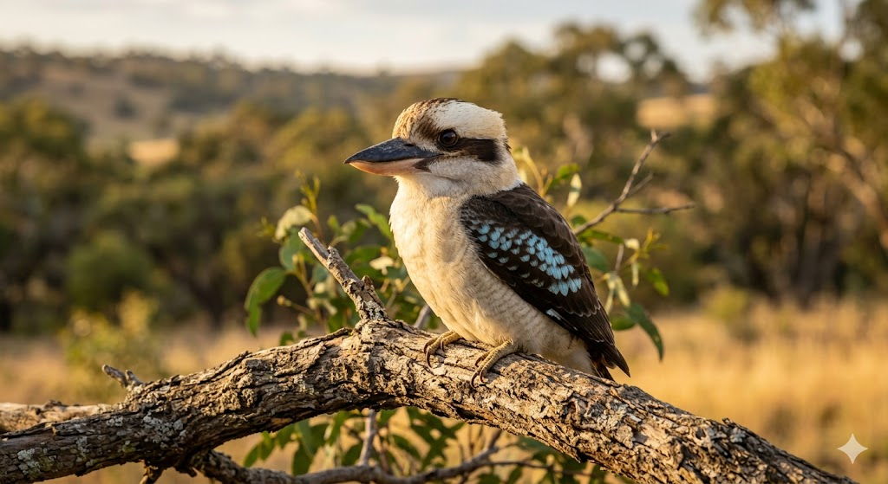

הקוקבורה הצוחקת
Laughing Kookaburra • Australia
א. אטימולוגיה (חקר השם המלא)
המקור הילידי: guuguubarra
שמה של הציפור הוא מחווה קולית למקורותיה האבוריג'ינים העתיקים:
המילה "Kookaburra" היא גרסה אנגלית למילה "guuguubarra". זהו שם אונומטופאי (מחקה צליל) המחקה את ה"צחוק" המפורסם של הציפור. עבור הילידים, קול זה היה שעון מעורר טבעי, והם כינו אותה "השעון של המתיישבים".
התואר "צוחקת" נוסף כדי להבדיל אותה מהקוקבורה כחולת-הכנף שקולה שונה לחלוטין.
הסוג: Dacelo
מקור: אנגרמה (שיכול אותיות)
השם Dacelo הוא אנגרמה של המילה Alcedo – השם הלטיני למשפחת השלדגים. הקוקבורה היא השלדג הגדול בעולם, והשם נוצר כדי להדגיש את הקשר המשפחתי למרות הגודל החריג.
המין: novaeguineae
מקור: טעות גאוגרפית
פירושו "מגינאה החדשה". שם זה ניתן בטעות על ידי חוקר הטבע הרמן זונר ב-1783, שחשב שהציפור הגיעה משם, בעוד שהיא למעשה אנדמית ליבשת אוסטרליה בלבד.
ניתוח זואולוגי: רבייה ותפוצה
יא כמות ביצים בכל הטלה
הקוקבורה מטילה בדרך כלל 2 עד 4 ביצים לבנות ובוהקות בכל מחזור רבייה. הביצים מוטלות במרווחים של יומיים זו מזו בתוך חללי עצים טבעיים או בקיני טרמיטים נטושים.
יב תקופת הדגירה
משך הדגירה נמשך בין 24 ל-26 ימים. מלאכת הדגירה משותפת לכל בני המשפחה – ההורים וה"עוזרים" (הצאצאים מהשנה הקודמת), מה שמבטיח הגנה מקסימלית על הביצים.
יג תפוצה גאוגרפית
הקוקבורה הצוחקת אנדמית למזרח ודרום-מזרח אוסטרליה. היא הובאה על ידי האדם גם למערב אוסטרליה, טסמניה וניו זילנד. היא נפוצה ביערות אקליפטוס פתוחים, אך מסתגלת היטב גם לפארקים עירוניים וגינות פרטיות.
יד מבנה חברתי: מונוגמיה
הקוקבורה היא מין מונוגמי לכל החיים. בני הזוג נשארים בטריטוריה שלהם לאורך כל השנה ומנהלים מערכת חברתית מורכבת של "רבייה שיתופית" (Cooperative Breeding), שבה הצאצאים הבוגרים נשארים בקן כדי לעזור בגידול האחים הצעירים.
ב. שנות חיים
הקוקבורה היא ציפור מאריכת חיים. בטבע היא חיה בממוצע בין 15 ל-20 שנים. בשבי תועדו מקרים של פרטים שהגיעו לגיל 25 שנה, הודות למבנה החברתי החזק המגן עליהן.
ג. גודל ומשקל
אורך גוף: 39 - 45 ס"מ.
מוטת כנפיים: 56 - 66 ס"מ.
משקל: 300 - 450 גרם.
זהו המין הגדול ביותר במשפחת השלדגיים.
ד. סיבת הבחירה כסמל לאומי (אוסטרליה)
הקוקבורה היא אחת הציפורים האהובות ביותר באוסטרליה ומייצגת את החוסן וההומור של היבשת. היא נבחרה משום שהיא חלק בלתי נפרד מהפולקלור האוסטרלי ומהשירים העממיים. הקוקבורה שימשה כאחד הקמעות הרשמיים של אולימפיאדת סידני 2000 (הקוקבורה "אולי").
בחירתה מסמלת את הקשר שבין האומה המודרנית לטבע הייחודי של היבשת. קולה הבוקע עם שחר ובשקיעה נתפס כצליל המגדיר של ה"אאוטבק" האוסטרלי.
ה. הבדלים בין זכר ונקבה
דימורפיזם זוויגי עדין ביותר: הזכרים והנקבות נראים כמעט זהים בניצוי הלבן-חום שלהם. ההבדל היחיד הוא בכתם הכחול על הכנפיים, שנוטה להיות עז ובולט יותר אצל הזכרים. הנקבות לרוב מעט גדולות וכבדות יותר מהזכרים.
ו. שם בנגלה של הציפור
לפינג קוקבורה (ল্যাফিং কুকাবুরা)
תעתיק פונטי לשם האנגלי בשפה הבנגלית.
ז. שנת הגילוי (טקסונומיה)
1783
הוגדרה מדעית על ידי חוקר הטבע הגרמני יוהאן הרמן.
ט. תזונה
טורף אופורטוניסט. ניזונה מחרקים גדולים, לטאות, נחשים (כולל ארסיים), עכברים וגוזלים של ציפורים אחרות. היא ידועה בשיטת הציד שלה: חבטת הטרף בעוצמה כנגד ענף עץ כדי להרוג אותו לפני הבליעה.
ח. נסיבות הגילוי ההיסטוריות
הקוקבורה הייתה ידועה למתיישבים האירופאים הראשונים באוסטרליה כבר במאה ה-18. הצליל המרתק שלה הוביל לתיאורים מלאי פליאה ביומני מסע, כשלעיתים המתיישבים החדשים חשבו שמדובר בצחוק של שדים או רוחות ביער. היא הפכה מהר מאוד לאחד הסמלים הוויזואליים והקוליים המזוהים ביותר עם ה"בוש" (Bush) האוסטרלי.
י. מצב השימור
ללא חשש (Least Concern - LC)
אוכלוסיית הקוקבורה יציבה ונפוצה מאוד. היא מוגנת על פי חוק באוסטרליה, ומסתגלת היטב לשינויים בסביבת המחייה שלה, כל עוד נשמרים עצי אקליפטוס עתיקים המספקים חללי קינון.